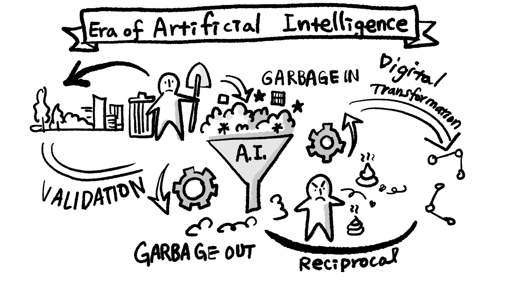

Structuring Your Visuals for AI
The Logical Sketchnote
Abstract
In a world of AI-generated content, the role of the visual practitioner is evolving. It's no longer just about creating beautiful drawings; it's about building logical structures that both humans and machines can understand, validate, and share. How can we move our practice from crafting pretty pictures to architecting clear, logical, and universally coherent ideas?
Jilly will share her unique methodology for creating structured visual notes designed for clarity and computational understanding. She will demonstrate how to organize your visuals, by mapping backgrounds, causes, factors, and results in a deliberate sequence, to make them more "AI-readable." You will learn how this logical approach not only sharpens your own thinking but also transforms your sketchnotes into powerful tools for validating information and bridging language barriers. This session is your forward-looking guide to becoming a more rigorous, logical, and globally-connected visual thinker.